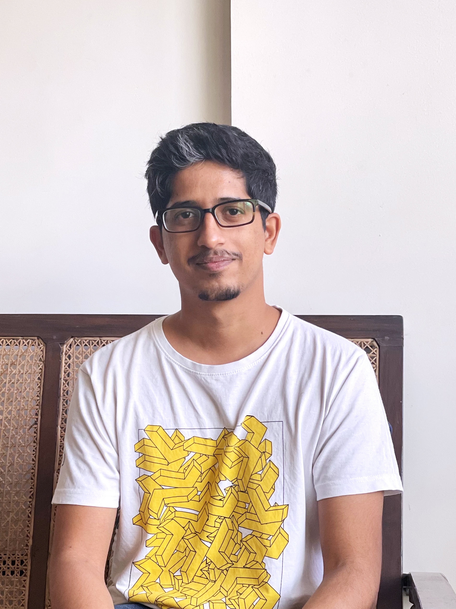

About Me
Hello! I'm Sunit, from India. I currently live at:
Nepean, Ottawa,
Ontario K2G 3R6
Canada
I was born on the 12th of January, 1993. My intials are SJJ and I currently study Interactive Media Design at Algonquin College in Ottawa, Canada. I'm an art director by profession and I love taking photographs in my free time. Exploring Canada is something I'd love to do with my time here as I enjoy trekking and am a bit of a nature enthusiast. My hobbies include:
- Photography
- Travel
- Music
One of my favourite quotes is:
"Be formless, shapeless, like water..."
- Bruce Lee, July 20th, 2016
This quote is inspirational as it inspires one to be moldable into whatever situation life throws at you. To be like water is to be in a state in which one is constantly learning, changing and challenging oneself. This way, I would grow up to be wise and stay relevant with the changing times, which is very important for me as a creative professional.
Thank you for your time!